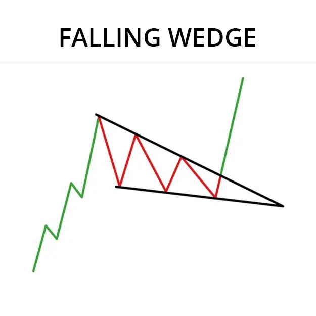
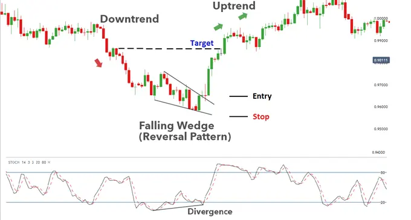

Falling Wedge पैटर्न एक पलटाव चार्ट पैटर्न है जो एक डाउनट्रेंड के अंत में गठित होता है।
यह पैटर्न एक झंडा या झंडा डंडी की तरह दिखाई देता है, इसलिए इसका नाम।
Falling Wedge पैटर्न एक संभावित वृद्धि का संकेत देता है और ट्रेडर्स आमतौर पर इसे ट्रेडिंग के अवसर के रूप में उपयोग करते हैं।
पैटर्न में प्रवेश करने के लिए, ट्रेडर्स आमतौर पर झंडा डंडी के नीचे एक 'ब्रेकअवे'
की खोज करते हैं, जो झंडा की ऊचाई की बराबर दूरी पर होता है।
झंडे की लंबाई झंडे के शीर्ष से ले जाकर झंडा डंडी की ऊचाई का माप लेता है।
झंडा की चौड़ाई झंडे के शीर्ष से ले जाकर झंडा के निचले हिस्सें में होने वाले टूटने का समयांतराल होती है।
Falling Wedge पैटर्न एक विश्वसनीय पलटाव पैटर्न नहीं है,
लेकिन यह एक संभावित वृद्धि का संकेत देता है और ट्रेडर्स आमतौर पर इसे ट्रेडिंग के अवसर के रूप में उपयोग करते हैं।
